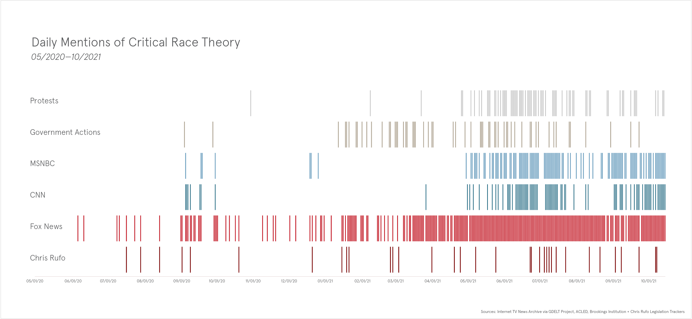
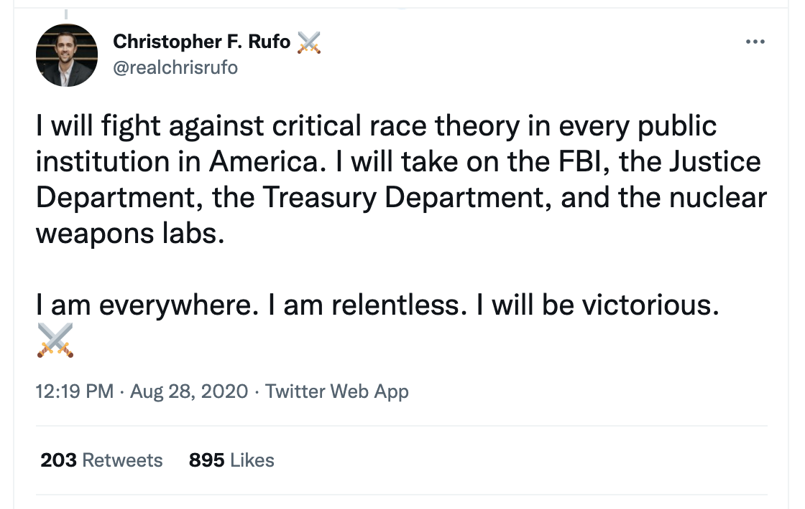
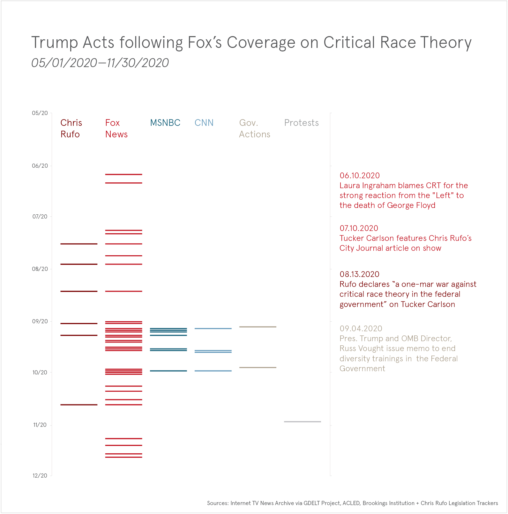
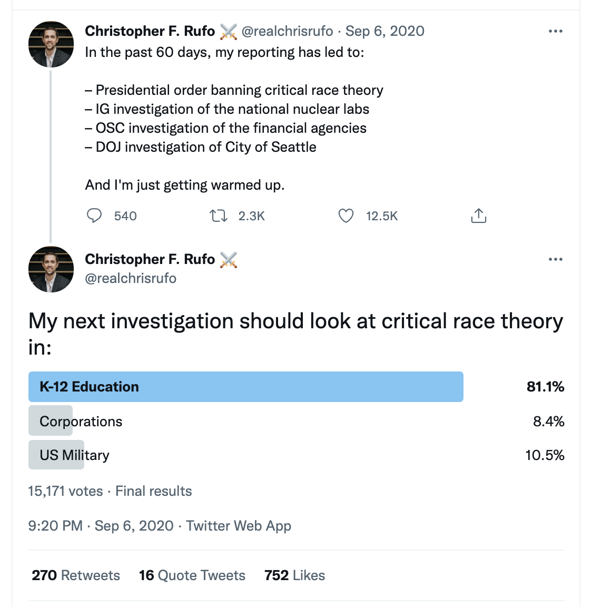
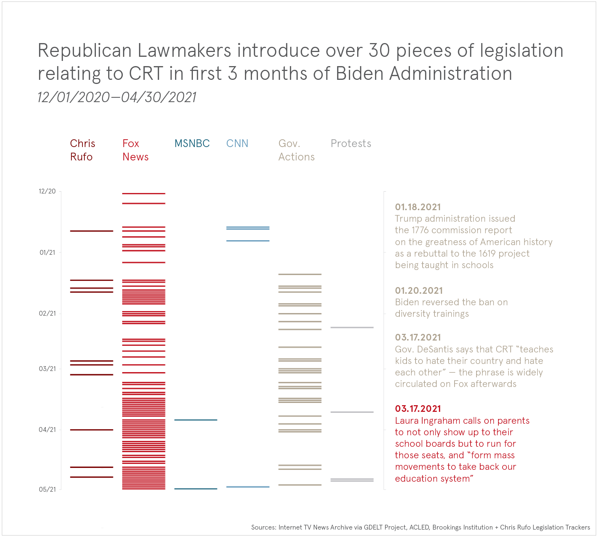
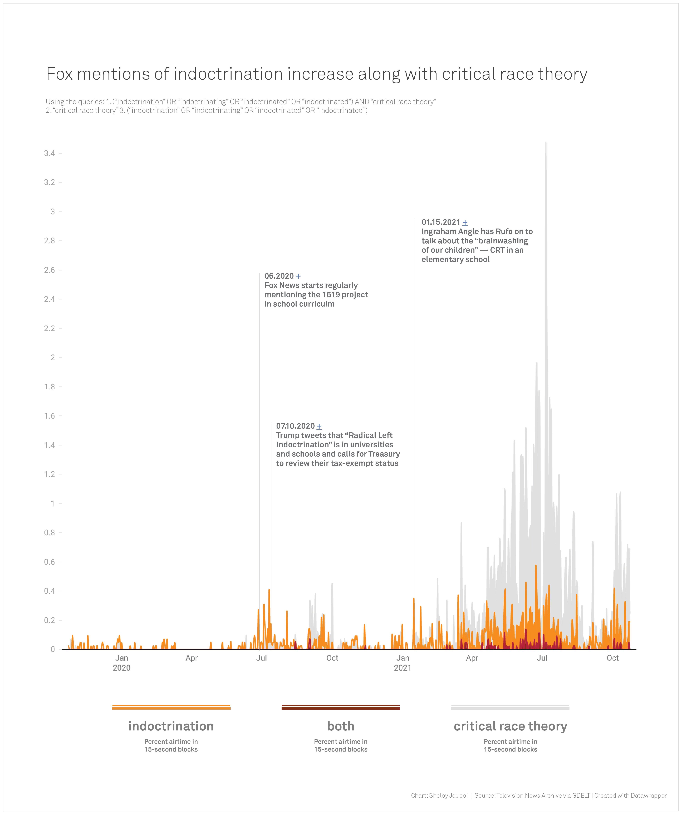
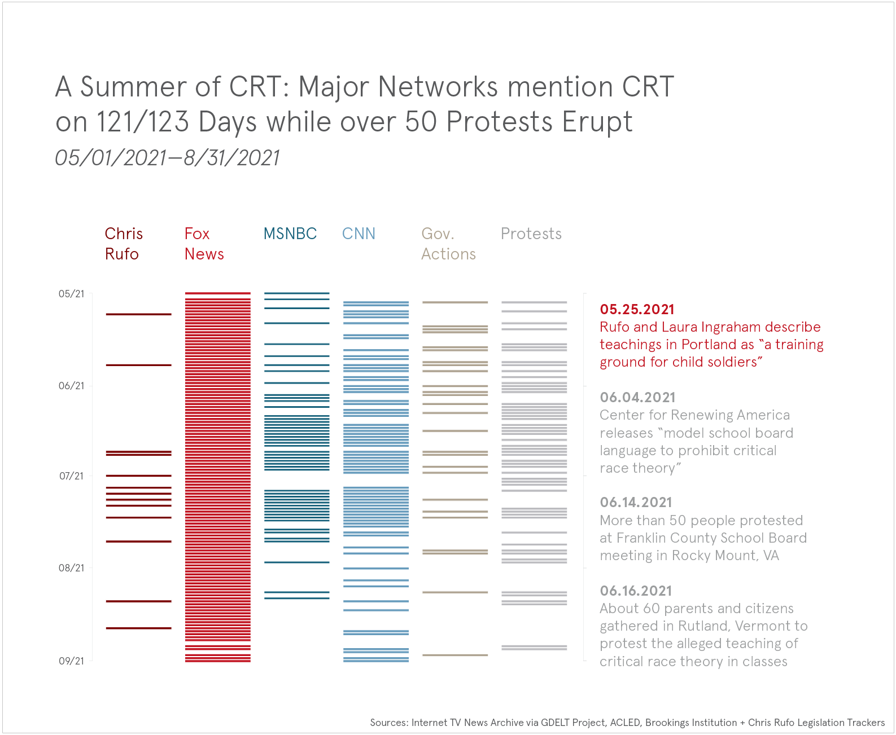
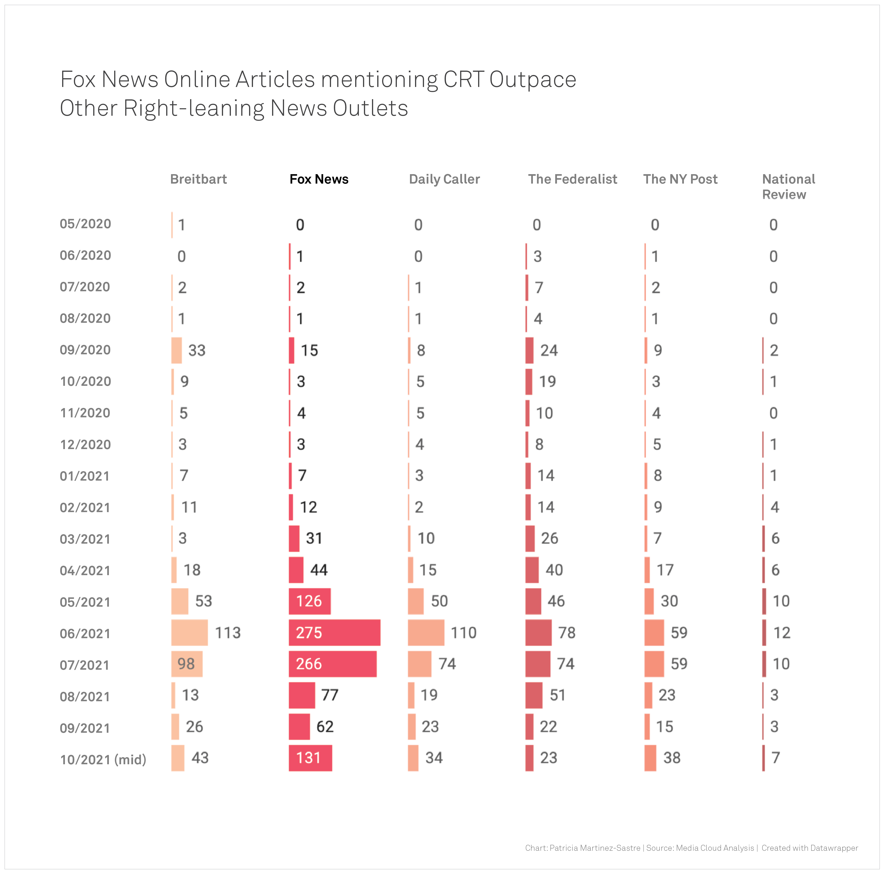
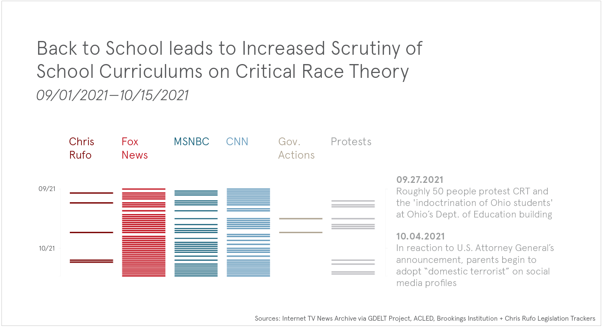
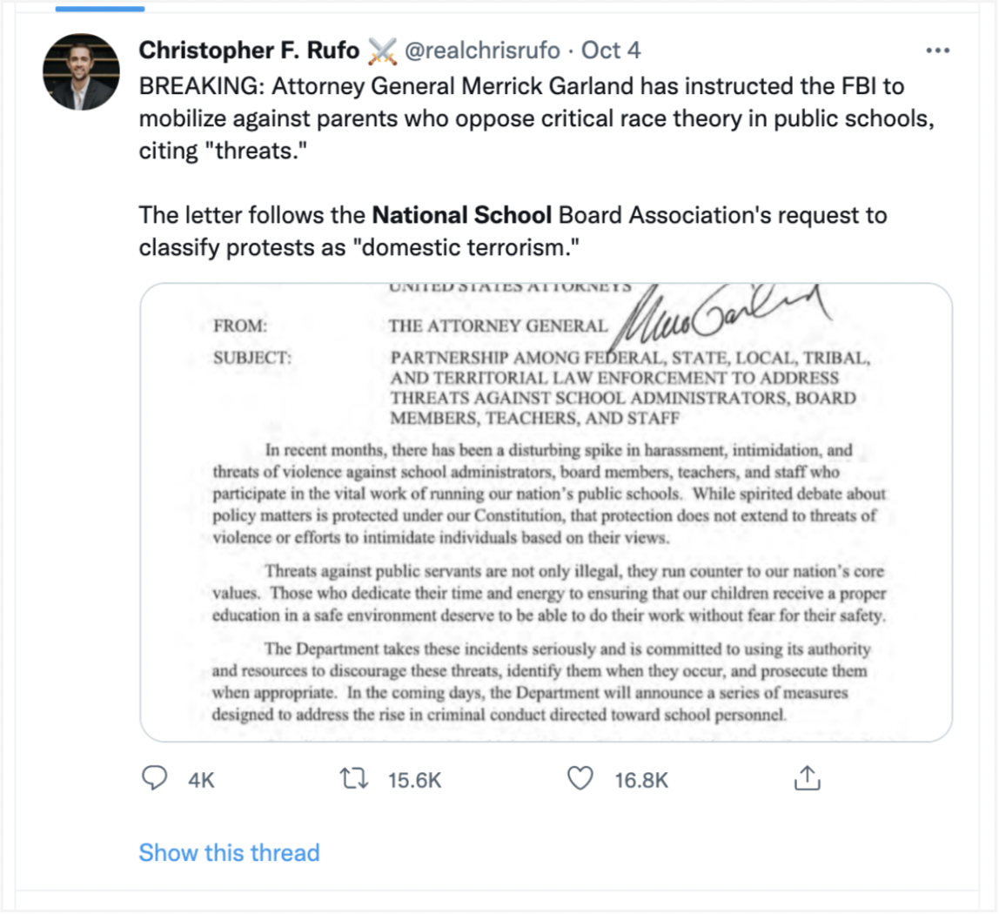

[Indoctri]Nation: From academia to the minds of children, how Fox News redefined critical race theory
Fox News has mentioned critical race theory nearly every day since the middle of March. That’s more than 200 days of virtually non-stop coverage of a term that up until recently was mainly restricted to academia, and to this day is not so well known among most Americans.
Nevertheless, this term or its acronym “CRT” is present frequently in the news today.
Parents have filed public record requests, fearful and angry that their childrens’ schools might be teaching a theory they consider racist and harmful. Legislators have written and voted on bills that would ban the term from classrooms, while some teachers have filed federal lawsuits to fight those bans.
A global event research project has recorded over 100 demonstrations for and against critical race theory all over the U.S. since February, many of them led by conservative groups and teachers unions.
And then there is Chris Rufo, the man who has taken credit for starting the national debate.

So, How Did We Get Here?
The public’s definition of critical race theory has undergone a transformation from a field of legal study to a catch-all term for everything dealing with systemic racism and equality in America. Legal scholars originally conceived of critical race theory as a framework for identifying racism in institutions. Over the past year, however, conservative pundits on Fox News have defined critical race theory as an attempt by liberals to label individuals as inherently racist.
Now, broad terms like 'equity', 'diversity and inclusion', or 'cultural awareness' have now also been equated with CRT by some Fox News anchors, elected officials, and everyday citizens.
A Fox News Editorial Priority
An analysis of television and online news coverage shows that Fox News repeatedly mentioned critical race theory for months before other major news outlets referenced the topic. Since May 2020, Fox News mentioned CRT over five times more than CNN and MSNBC and published 1,060 articles that mentioned the phrase, the most out of any major news outlet, according to television news transcripts from the Internet TV News Archive and articles in the Media Cloud database. Popular shows, FOX and Friends and The Ingraham Angle have talked about critical race theory over 500 and 300 times respectively.
Their coverage has frequently propagated fear-inducing claims that schools have been shaming, brainwashing and ultimately harming children across the nation.
05/2020 – 11/2020: From Black Lives Matter to Critical Race Theory
In the weeks following George Floyd’s murder on May 25 last year, Black Lives Matter protests gained nationwide support and anti-racism book sales surged. Protestors toppled confederate statues.
And just a couple of weeks later critical race theory was introduced onto the Fox News mainstage by one of its hosts—Laura Ingraham.
In a monologue on June 10, she reflects upon the events of the past several weeks saying, “what we are witnessing is a relentless propaganda war against the old teachings about America.” The banner beneath her changed from “Left Destroying Our Culture” to “Liberals Surrender America.”
Ingraham went on to say that in years past, Republicans and Democrats had dismissed the academic concept of critical race theory. “Today those theories are mainstream,” she said. “I think what we’re seeing now from the left is the result of, I think it’s just decades of critical race theory [and] grievance studies infecting our schools and our culture.”
While Ingraham had claimed critical race theory was mainstream, Fox had mentioned the phrase only a handful of times in the several years prior.
Ingraham’s segment was part of the beginning of what would become a steady stream of critical race theory coverage on Fox. From July 8 through July 28 of 2020, Ingram and Tucker Carlson hosted four different experts who discussed how “critical race theory is incredibly pervasive in the American education system” and that “ideological extremism [was] infiltrating and indoctrinating our children.”

One of those experts was self-proclaimed investigative journalist Chris Rufo, who has taken credit for starting the national critical race theory debate. After two appearances on the Ingraham Angle in July, Rufo went on to appear on Fox regularly as a go-to expert about how critical race theory was “spreading like wildfire” through American institutions.
Rufo declared himself to be in a “one-man war against critical race theory” on Tucker Carlson in mid-August.
Just a few days after that appearance, President Trump and Russ Vought, the Director of the Office of Management and Budget, issued a memorandum ordering government agencies to stop conducting diversity trainings.

In early September, after Rufo’s first four CRT-related appearances on Fox, he tweeted out a poll, asking whether his audience wanted his next investigation to “look at critical race theory in: K-12 education, corporations or U.S. military." Respondents voted overwhelmingly in favor of K-12 education.

About 15 weeks later, Rufo published an article called “Indoctrinating an entire school system in PC racism,” that discussed a “racially charged training that convicted U.S. schools of committing ‘spirit murdering.’” Rufo appeared on The Ingraham Angle a few days later to discuss the article. The introductory chyron reads, “Indoctrinating our Children.”
12/2020 – 04/2021: CNN & MSNBC Go Dark
In the four months from December 2020 through April 2021, while the country was focused on the contested results of the election, the inauguration, and the first months of the Biden administration, CNN and MSNBC had virtually nothing to say about critical race theory.
In those 151 days, MSNBC covered the topic for a total of four days. CNN covered it once.
Fox News mentioned critical race theory on its airwaves for a total of 78 days.
Simultaneously, legislators in at least 20 different states started introducing bills. Many were copycats of Trump’s Executive Order opposing the use of “race or sex stereotyping or scapegoating.” Others explicitly prohibited teaching the 1619 Project and other materials “associated with efforts to reframe this country's history in a way that promotes racial divisiveness.”

Rufo appeared on Fox nine times from December through April and all but two of those segments described critical race theory as infiltrating classrooms. In those segments Laura Ingraham said schools were “poisoning four- and five-year-olds” and “brainwashing our children.” Rufo described how a social identity lesson in a third-grade classroom reminded one Chinese mother of the Cultural Revolution which “led to the deaths of millions.”
“These lessons terrify her to her core,” he said.
Ingraham and Rufo made the same connection a month later saying, “what we’re seeing here in the United States is a similar effort.”
Several times critical race theory was juxtaposed with communism or China , with one guest saying the government was trying to use critical race theory to divide people against each other, undermine parental authority and ultimately “abuse” children.
Laura Ingraham called critical race theory a tool “teachers, school board members, [and] consultants are using to turn children against their parents.”
Candace Owens said she thought, “parents should be terrified.”
Word Associations
Transcripts of Fox News broadcast coverage from May 2020 through April 2021 showed that the words most commonly used with the term “critical race theory” shifted.
From May through November, “federal” and “training” were each mentioned in nearly 20 percent of all clips containing “critical race theory.” From December through April the top words included “school(s)” and “parents.”
As mentions of critical race theory increased on Fox, so did mentions of “indoctrination.” The term was often used in discussions of progressive ideology being taught in schools; Fox News hosts and commentators repeatedly instructed viewers to “take a stand” and “push back.”
Laura Ingraham, in a mid-March segment encouraged parents to not just show up at school board meetings but to start running for the seats.
“Parents have to do more than just post on social media and talk amongst themselves about it,” she said. “They must start to form mass movements to take back our education system.”

05/2021 – 08/2021: CRT Coverage Reaches its Peak During Summer Months
From May to early August this year, the exposure on Fox about CRT steadily rose both on television and online. Mentions of the term critical race theory in broadcasts more than doubled from the month before. Fox News mentioned CRT over 700 times in May compared to CNN’s 70 and MSNBC’s 90.
In their coverage, Fox started featuring school board meetings, highlighting tensions between parents and teachers and the alleged indoctrination of children.
“All over the country beginning last June school curricula have changed completely and become explicitly political and openly racist,” claimed Tucker Carlson on his May 18 broadcast, “and most parents have just sat there on their hands and watched it happen and watched their kids hurt by it.”
He then featured a mother whose speech against CRT at a school committee meeting in Loudoun County, Virginia, had gone viral on Twitter a few days before.
In one of the most violent segments we reviewed, Laura Ingraham cited an “explosive exposé” by Rufo claiming public schools in Portland were raising "child soldiers." She subsequently played a graphic video of someone pushing a white man down on the ground and a supposed 14-year-old kicking him in the face. The video showed the man’s bloody face and someone saying "knocked this motherf***er out" and “Black lives matter you, f*****!”
Ingraham then introduced a smiling Rufo and asked, “why should every American be concerned across the country about the indoctrination going on in the schools there?”
Rufo responded saying that Portland schools had adopted “The Pedagogy of the Oppressed,” a 1970s Brazilian curriculum with roots in social justice. Simultaneously, a video played next to him showing two men wearing helmets, safety vests and combat boots walk in a street shrouded in smoke and explosions.
In May, at least 15 different protests against CRT cropped up in 12 US states. In Georgia, hundreds gathered outside of a school board meeting in Craven County to protest critical race theory in schools, according to the Atlanta Journal Constitution. As a result the board reportedly halted its plans to implement a “diversity, equity and inclusion” program.
In June, Fox’s written coverage reached its peak, totaling 275 articles published that mention critical race theory, and on television the phrase was mentioned over 1,200 times. Over 50 protests took place in 25 different states that month, according to ACLED. Nearly half favored CRT. North Carolina alone saw six total demonstrations on both sides of the debate. In New Hampshire there were five.

Meanwhile, the Center for Renewing America, a right-leaning organization led by Russ Vought, released a template for bills “to prohibit CRT” and a toolkit for “combatting critical race theory” including a list of 86 “buzzwords” to help parents identify critical race theory. Some legislators used this list in bills banning anti-racism training for teachers.
A YouGov poll conducted in the middle of June estimated that only a third of Democrats self-reported having heard of critical race theory and having a good idea of what it is compared to 41 percent of Republicans. Of the Democrats who said they were aware of CRT, 86 percent had a favorable opinion. In comparison, only 6 percent of Republicans familiar with the term were in favor of it.
Competing Networks Cover CRT
As protests and legal action escalated during the summer months, competing networks CNN and MSNBC dramatically increased their coverage, though the networks still did not mention the term as often as Fox.
CNN and MSNBC used airtime to try to debunk the statements made by Fox. For instance, on June 28 Joy Reid hosted the historian Ibram X. Kendi and author of “How to Be an Antiracist.” In the segment of “The Reid Out,” she asked Kendi direct questions like if he believed "white Americans are inherently racist,"—a phrase repeatedly used by Fox to define the tenets of critical race theory—or if he knew of "any school teaching that white Americans are inherently racist.” Kendi’s response was a blank "no.”
The Right Wing Ecosystem
In the summer, coverage surrounding CRT started to extensively focus on education. Across right-leaning media outlets, the topic of critical race theory became more common following many months of limited coverage. Previously, it was only mentioned on rare occasions, according to an analysis of online media coverage using Media Cloud. Fox News’ written coverage grew significantly in June, reaching a peak of 275 articles published that mentioned “critical race theory” at least in one sentence. That figure equaled 5.3 percent of the total number of stories published that month, followed closely by the Daily Caller (with 4.3 percent) and only surpassed by The Federalist, whose stories mentioning CRT climbed up to 14 percent in June.

From the peak of activity during June and early July, the frequency of broadcast coverage, protests, and government actions relating to CRT declined leading into the back-to-school period in late August.
09/2021 – Present: Back to School
In recent weeks, critical race theory coverage was revived by the networks as parents demanded to know what schools were teaching their children as they headed back to school.
A bill was introduced into the Pennsylvania General Assembly requiring all public school curriculums be uploaded to a publicly available website. Similarly, a bill named the “Civics Transparency Act” was drafted for the Wyoming Senate.

Tom Hosler, a superintendent of an Ohio school district, told us in an interview that critical race theory has been a focus for some parents in his district— “we've had a hard time kind of combating and defining what it is and what it is not.”
Hosler says parents have been filing dozens of public records requests, asking for any documentation containing a broad array of terms, like “equity” or “social justice.”
“Social Emotional Learning” is also on the list of CRT-related words being circulated. It’s a decades-old framework for aiding childhood social and emotional development. Hosler says he and his staff have to find new ways to refer to programs like this one, because the words are triggering so much fear and anger.
“Critical race theory becomes this catch-all phrase for everything that might be threatening to them or things they are not comfortable with,” he says.
Hosler says that some parents are trying to opt their children out of lessons like these.
Fox News commentators have even rallied parents to pull their children out of public school altogether. Candace Owens warned parents at the beginning of October that they needed to act quickly and remove their kids from “indoctrination camps.”
Tensions have grown in school districts around the country, so much so that in early October, Attorney General Merrick Garland directed the FBI and other Department of Justice departments to investigate threats of violence and harassment of school officials and board members.

In response, Chris Rufo falsely described the National School Boards Association (NSBA)’s request for assistance as “classifying protests as ‘domestic terrorism’” in a tweet. Fox and other right-wing media outlets launched a campaign referring to Garland's actions as a "FBI crackdown" and interviewed parents who labeled themselves “Domestic Terrorist” on social media.
Critical race theory has even become a talking point in the November Virginia Governor’s race as opponents traded advertisements discussing issues of race in education. Glenn Youngkin, the Republican candidate, held a “Parents Matter Rally” on October 13th.
In Summary
The critical race theory debate in the U.S. has been a matter of definitions: defining a person’s identity, defining American history, defining the phrase itself.
Fox News was the first network to focus its attention on redefining and identifying critical race theory for its audience. In the year-and-a-half since the conversation started, the organization published about and discussed this topic more than any other news organization.
From a media perspective, today the phrase has become commonplace on many different networks and publications. Dozens of protests have taken place in nearly 70 cities across the U.S.
Thousands of parents are worried about what their children are being taught. Over seventy pieces of legislation have been crafted that seek to define what children should or shouldn't be exposed to in schools. And now that school boards across the country have seats up for election on November 2, the debate could even define the agendas of school leadership nationwide.
Process
In October 2021, Shelby Jouppi, Patricia Martinez-Sastre and I worked on a data project analyzing major network coverage of "critical race theory" in comparison to the timing of lawmakers introduction of legislation, "anti-CRT" protests, and Chris Rufo appearances on Fox News.
We used media coverage data gathered from the Internet TV News Archive via the GDELT Project, ACLED's events data, and legislation data from trackers by the Brookings Institution and Chris Rufo.
The ultimate goal is to make the timeline interactive by using d3 and scrollytelling to walk a reader through the timeline. Below is a static version of what it will hopefully look like.
Additionally, as part of the reporting process we looked at trigrams of words most commonly used by the major networks surrounding critical race theory.